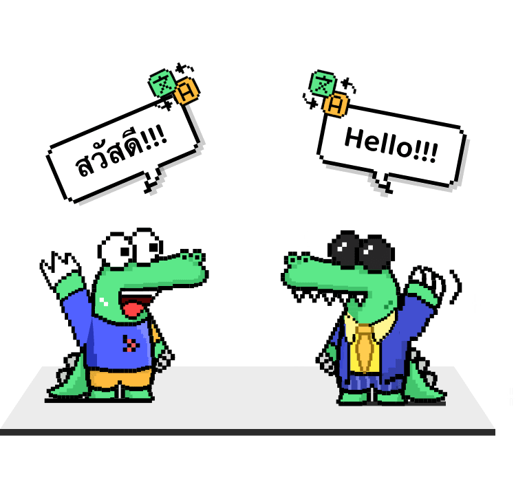

用了 Hay 半年才挖到的 4 个隐藏细节，匹配体验直接翻倍
从匹配调度到翻译技巧，从金币消耗到安装校验——这些藏在界面背后的机制，大多数人用了几个月都没注意到。
你以为 Hay 就是个"打开 → 点匹配 → 等 → 视频聊天"的流水线？我用了快半年才发现，它藏了不少界面上完全不提示的小机制——知道和不知道，体验差得不是一星半点。
不是那种"设置里藏了个开关"的老套路，是调度逻辑、翻译通道、金币结算这些底层设计，官方文档都懒得单独拎出来说的东西。今天把我翻出来的几件事分享一下。
隐藏点一：匹配等待时你一分钱都没花
第一次用 Hay 的时候我犯过一个低级错误：点了"开始匹配"，等了快三分钟，心里嘀咕"这三分钟是不是一直在烧金币"，忍不住点取消——手都悬在确认按钮上了。
后来去翻才搞清楚：接通那一刻才开始计时计费。等待界面那堆转圈动效，只是告诉你"你已经进调度队列了"，这期间取消匹配、重选筛选条件、甚至直接退出，都不扣任何东西。
这个细节为什么说值得挖？因为它直接影响你的使用策略：
- 不要怕等太久就急着取消——等的过程是零成本的，真不想等再走就行
- 想换筛选条件（比如从"不限"改成"只要女生"），不用退出重进，直接取消重选，没有任何损失
- 反过来，接通前也不用紧张——什么"要不要先整理下镜头背景"这种事，趁着等匹配的时间做就好，反正不花钱
它的官网上没写这条，中文社区也几乎没人提，但这是你每天打开应用都能用到的基础事实。
隐藏点二：实时翻译的"双通道"不是摆设
Hay 的实时翻译是它能在全球随机匹配品类里站稳脚的核心能力，这点大家都知道。但很少有人注意到翻译其实分了两条通道，用法完全不一样：
- 文字通道：聊天输入框的消息，原文和译文并列展示，所见即所得。数字、人名、地名这类容易译错的东西，走文字通道几乎不会出错。
- 语音通道：连线中的语音对话，应用内置翻译处理，界面以文字辅助展示译文。但机器翻译不是同声传译——方言、网络梗、诗歌类内容效果非常有限。

我翻了一堆连线记录，后来去Hay文档补了一下翻译原理才搞透，总结出四条能显著提升翻译效果的习惯：
- 说短句——长句、从句套从句的翻译误差呈指数增长，一句一意最稳
- 避开俚语——"绝了""拿捏""yyds"这类词直译过去大概率让对方一脸问号，换平实说法
- 数字和专名用打字发——哪怕你嘴上说了一遍，打字再发一次，文字通道的翻译准度远高于语音
- 卡壳就换词——发现对方表情困惑，说明刚才那句译砸了，别重复，换个说法重讲
最后那条最容易被忽略：很多人觉得"翻译不对就等它自动修正"——但翻译不会自纠正，错了就是错了，对方已经错过那个信息窗口了。主动换词才是正解。
隐藏点三：为什么有时秒连、有时等五分钟——这不是服务器在坑你
点匹配后等待时间的方差大到离谱，我一开始以为是网络波动，后来才明白这是条件交集调度的必然结果：
你选了"不限性别、不限地区、不限兴趣"，在线用户池子有几十万，交集近乎全体，当然秒连。但如果你说"只要日本女生、20-25岁、喜欢动漫"，交集可能只有几百人，而且这几百人不一定此刻都在等匹配——等待时间自然就拉长了。
这条机制解释了两个让很多人困惑的现象：
- 为什么买了会员筛选反而更慢——会员档的筛选范围更精细（年龄区间、地区到城市、兴趣标签全开放），但你条件收得越窄，交集越小，等待时间越长。精细筛选的真正价值是"匹配质量更高"，不是"匹配更快"。
- 为什么深夜匹配特别慢——不是服务器挂了，是在线池子本身就小，你再叠几层筛选条件，交集可能为空
我个人的习惯是：想随便聊聊就放宽条件等秒连，想找特定人群才收窄——但收窄前先做好"可能要等十分钟"的心理准备。
隐藏点四：安装前三查——90% 的人跳过了但这能救命
这条可能算"外部隐藏信息"，不是应用本身的功能设计，但对国内用户来说极其重要：Hay 在 Google Play 上架，国内用户可以从官方下载获取安装包，也有人走第三方渠道拿 APK。安装包的真伪判断，全靠你自己。
三查其实很简单：
- 查包名——官方发布的国际版包名是
com.soud.hai，安装来源如果标注包名，核对一下，不一样直接跳过 - 查体积——8.53.0 版本的安装包体积公开信息是可查的，差太大（比如少了几十 MB）说明被裁剪或替换过，警惕
- 查权限——安装时如果弹出索要通讯录全量访问、短信读取这类和视频聊天无关的高敏感权限，直接拒绝换渠道
我见过有人装了个"XX破解版"，包名改得四不像，装上之后疯狂弹广告还偷读剪贴板——这不是 Hay 的问题，是第三方渠道的问题。三查花不了 30 秒，能省掉后面无数麻烦。
一个别踩的坑
筛选条件收太窄是体验杀手，但还有个更隐蔽的坑：被秒断后心态崩。
随机匹配的淘汰率极高，对方给你决定"聊不聊"的窗口就是前三十秒。你自我介绍、对方挂了；你网络卡顿、对方挂了；对方本身就在"快速刷一圈"模式、挂了。被秒断不是你的问题，也不消耗任何东西——但我见过不少人连续被断几次之后开始自我怀疑甚至上头。
把"下一个会更好"当成默认预期，这个品类才玩得下去。反过来你也拥有同样的权利——不想聊的连线，挂断就是最干净的处理。
收尾
Hay 这类随机匹配应用，体验上限不在功能多少，而在你对底层机制的理解深度。知道金币什么时候扣、知道翻译走哪条通道、知道等待时间为什么波动、知道怎么识别山寨包——这几条加起来，每天能帮你省至少十几分钟的无效等待和几次尴尬。
把它用透，比换个新应用靠谱多了。
资料来源说明：本文基于公开可查的 Hay 安卓版 8.53.0 版本实际使用体验，结合中文社区整理的使用文档。完整的版本说明、匹配机制详解和翻译技巧手册，在这套整理资料里都能找到。文档内容在三个仓库同步：GitHub 的 APK 仓库里 APP/Hay 目录、Gitee 的镜像仓库同名目录、以及 GitCode 国内镜像——国内访问 Gitee 和 GitCode 通常更流畅。